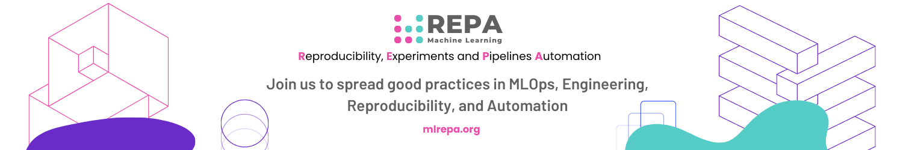

Web Services, Frameworks, APIs¶
üëĬ†Overview¶
This tutorial covers the basics of RESTful APIs, including their principles and usage with HTTP methods. It introduces the cURL tool for interacting with web services and discusses the limitations of REST APIs.
Tutorial also presents gRPC as a high-performance alternative using Protocol Buffers and the HTTP/2 protocol. OpenAPI and Flask are briefly mentioned as tools for describing REST APIs and building web applications.
Overall, this tutorial provides a concise introduction to these concepts, exploring the fundamentals of RESTful APIs and showcasing various frameworks and tools for web development.
üéج†Goals¶
- Learn the fundamentals of RESTful APIs, including their principles and usage with HTTP methods.
- Gain an understanding of the cURL tool and its application in interacting with web services.
- Explore the limitations of REST APIs and discover gRPC as a high-performance alternative.
- Understand how gRPC leverages Protocol Buffers and the HTTP/2 protocol.
- Introduction to OpenAPI and Flask as tools for describing REST APIs and building web applications.
- Develop a solid foundation in RESTful API concepts.
- Acquire knowledge of various frameworks and tools used in web development.
‚öíÔ∏è Tutorial: Web Services, Frameworks, APIs¶
API¶
An Application Programming Interface (API) is a set of rules and protocols that allows different software applications to communicate and interact with each other. It defines the methods, data formats, and conventions that applications can use to request services from each other.
APIs can be categorized into different types based on their purpose and implementation. Some common types include:
- Internal APIs (custom libraries) - for communication between microservices within an application/company.
- External APIs (web services) - allow third-party developers to access a service over the internet using HTTP or other protocols.
How to reconcile different APIs? - REST and RPC
What is REST?¶
REST API stands for Representational State Transfer Application Programming Interface. It is an architectural style used for designing networked applications, particularly web services. RESTful APIs are based on a set of principles and constraints that enable different systems to exchange data over the internet.
So, REST is a set of principles that enable different systems to exchange data and scale applications.
- Client-Server Architecture: The client and server are separate entities that communicate over the network. The client is responsible for the user interface and user experience, while the server handles data storage and processing.
- Statelessness: Each request from the client to the server must contain all the necessary information to understand and process the request. The server does not store any client state between requests, which allows for scalability and reliability.
- Uniform Interface: REST APIs use a uniform and consistent interface for interacting with resources. This includes using standard HTTP methods (GET, POST, PUT, DELETE) for different operations on resources and utilizing unique URLs (Uniform Resource Locators) to identify resources.
- Cacheability: Responses from the server can be cached by the client, reducing the need for repeated requests to the server. Caching improves performance and efficiency, especially for resources that don't frequently change.
- Layered System: REST allows for a layered architecture, where multiple layers can exist between the client and server. Each layer adds functionality or performs specific tasks, providing flexibility and separation of concerns.
- Code-On-Demand (optional): Servers can send executable code to the client on-demand, extending the client's functionality. However, this constraint is optional and not commonly used in most REST APIs.
A RESTful API allows performing CRUD operations on all objects represented in the system. CRUD - an abbreviation that describes four basic actions:
- C - Create
- R - Read
- U - Update
- D - Delete
CRUD corresponds the four HTTP methods:
- POST — Create a new resource
- GET — Retrieve a specific resource (by id) or a collection of resources
- PUT — Update a specific resource (by id)
- DELETE — Delete a specific resource by id
The response is usually returned in JSON or XML format (less common). Here is a general REST API model:
REST API examples
- GET - Retrieve a list of objects:
Request:
Response:
- POST - Add an object:
Request:
Request object:
Response:
The id will be assigned automatically.
- PUT - Update a selected record:
Request:
Request object:
Response:
- DELETE - Delete a selected object:
Request:
Another example of API method description
Response Codes¶
| Code | Name | Description |
|---|---|---|
| 200 | OK | The request was successful. |
| 201 | Created | Returned when a resource is created in a collection. |
| 204 | No Content | There is no content. This is a response to a successful request, such as after a DELETE operation. |
| Code | Name | Description |
|---|---|---|
| 400 | Bad Request | Client-side error. For example, incorrect request syntax or invalid request parameters. |
| 401 | Unauthorized | The client is trying to access a restricted resource without providing authorization data. |
| 403 | Forbidden | The server understood the request but refuses to process it. |
| 404 | Not Found | The requested resource does not exist. |
| 405 | Method Not Allowed | The client attempted to use a method that is not allowed for the resource. For example, using the DELETE method, but the resource does not support it. |
| 500 | Server Error | General response for a server-side error when no other error code is applicable. |
Learn more: HTTP response status codes
cURL tool¶
cURL (pronounced "curl") is a command-line tool and library for making HTTP requests and interacting with web services.
It allows you to send and receive data over various protocols, including HTTP, HTTPS, FTP, FTPS, SFTP, and more.
Installation
- Available in MacOS, Ubuntu - accessible from the command line.
- Requires installation on Windows. Instructions. Alternatively, you can install Git Bush.
Note
üí° To check the installation in Windows, open the command prompt cmd ➜ curl -V. If installed, you'll see a message like:
Request Examples
Let’s look on a few examples of using cURL. You may find more examples and practice cURL on the ReqBin website, or check the cURL documentation page.
-
Curl - GET Request
GET method is the default. The same result can be obtained using:
To get a response with headers:
The response will contain the HTTP version, status code, and status message (e.g., HTTP/2 200 OK). Then the response headers, an empty line, and the response body.
-
Curl - POST Request
Using data transfer (URL-encoded):
Here,
-dor--datais the flag indicating data transfer. -
POST Request using JSON format
Here,
-Hor--headeris the flag for request header.Alternatively, you can pass the JSON as a file:
Additional flags:
u user:pass- for authentication when the server requires it.curl -verbose- to display detailed information.L- for handling redirects (if the resource has moved).O- to save with the same name, oro data.jsonto specify a new name.
Drawbacks/Features of REST API:¶
- Need to develop language-specific APIs for each language. (Swagger can be used, which we'll cover later)
- JSON for data transfer is not a binary format. Slower data transfer but easier to view data.
- HTTP 1.1 protocol does not support streaming data transfer.
These drawbacks are addressed by gRPC (Google Remote Procedure Call).
gRPC¶
gRPC (Google Remote Procedure Call) is an open-source high-performance framework developed by Google. It is designed for efficient and reliable communication between distributed systems and allows developers to define services and message types using Protocol Buffers (protobuf), a language-agnostic binary serialization format.
gRPC is based on RPC (Remote Procedure Call) - invoking remote code on other machines.
{kind=link}
Differences:
- Code generation using standard tools. It uses the Protoc compiler, which generates code for multiple languages, including Python.
- Binary data format Protobuf, which uses compression for faster data transfer.
- HTTP/2 protocol (since 2015) for streaming data transfer, binary format, and improved performance.
Which one to choose?:
- For speed, choose gRPC.
- For monolithic applications accessible externally or via a browser, choose REST API.
- For distributed systems with microservices, choose gRPC.
- For streaming data (e.g., sensor data), choose gRPC.
You can know more details here: - Quick Start and gRPC Guide for Python
OpenAPI¶
The widely accepted format for describing REST APIs is OpenAPI, also known as Swagger.
The specification is a single file in JSON or YAML format, consisting of three sections:
- Header, containing the API's name, description, version, and additional information.
- Description of all resources, including their identifiers, HTTP methods, input parameters, response codes, and response body formats.
- Definitions of objects using JSON Schema format, which can be used for both input parameters and responses.
Web Frameworks¶
Flask¶
What is it? - A web framework for Python.
Why choose it by default?
- Minimalistic framework.
- Rapid prototyping.
- Low-level framework, which makes it easier to understand Django after learning Flask.
Additionally, Flask is the best choice if:
- Developing a microservices architecture.
- Implementing a REST API without frontend.
- Needing flexible customization.
Minimal Flask App¶
from flask import Flask
app = Flask(__name__)
@app.route('/')
def hello_world():
return 'Hello, World!'
if __name__ == '__main__':
app.run()
After running the application, you will see the following message:
Note
üí° Localhost - with IP address 127.0.0.1 ➜ the computer's internal network.
Parameters for app.run()¶
1. Debug mode:
Note
The server restarts automatically when code changes.It allows working with a debugger.Remember to disable it when deploying the service.
2. Make the server publicly accessible
By default, it is only accessible locally.
Templates¶
A template is a file containing HTML code and markup elements that allow for displaying dynamic content.
The render_template() function invokes the Jinja2 template engine, which comes bundled with Flask.
Templates are stored in the /templates directory.
Example of a template (/templates/index.html):
Example code that renders the template into an HTML page:
from flask import Flask, render_template
app = Flask(__name__)
# some code
@app.route('/')
def index():
return render_template('index.html', pred=model.prediction)
Flask API¶
Flask-RESTX is an extension for Flask that adds support for rapid development of REST APIs.
Alternatives: flask-restplus, flask-restful
A simple example of an application implementing an API with Flask:
from flask import Flask
from flask_restx import Api, Resource, fields
app = Flask(__name__)
api = Api(app)
passwords = []
a_password = api.model('Resource', {'password': fields.String})
@api.route('/password')
class Prediction(Resource):
def get(self):
return passwords
@api.expect(a_password)
def post(self):
passwords.append(api.payload)
return {'Result': 'pass added'}, 201
Flask-RESTX provides a set of tools for generating documentation using Swagger.
The Swagger API documentation is generated automatically and can be accessed via the root URL of the API:
Deployment¶
Step-by-step guide on how to deploy a Flask application on Heroku
Deployment will be covered in more detail in the 4th lecture. It will also be beneficial to have a basic understanding of Git.
Django¶
Django is another popular Python framework for web application or API development.
Features:
- Built-in Django Admin
- Built-in protection against common vulnerabilities and attacks, such as SQL injection, CSRF, XSS, clickjacking, etc.
- ORM support
Django is a good choice for rapid development of scalable applications. However, it may not be the best choice for microservices, simple frontend-less API applications, or database-less applications.
FastAPI¶
Advantages:
- Built-in API documentation
- Asynchronous support
- Validation (with pydantic)
- High performance
Installation:
Streamlit¶
Streamlit is an open-source Python framework for rapid development of machine learning dashboards without requiring frontend knowledge (HTML, CSS, and JavaScript).
Installation
Features
- Widgets
- Checkboxes
- SelectBox
- Slider
- MultiSelect (tags)
- Visualization
- Matplotlib
- Component for rendering Folium maps.
üîó Useful links:
üèÅ Conclusion¶
- REST API:
- Standardized approach for designing web services using HTTP methods and endpoints.
- Supports CRUD operations and communicates data through JSON or XML.
- Flexible and widely adopted for building web services.
- gRPC:
- High-performance framework for building distributed systems and microservices.
- Uses RPC model and Protocol Buffers for efficient communication.
- Supports multiple languages and offers advanced features like streaming.
- Web Frameworks:
- Flask, Django, and FastAPI provide structured approaches for web development.
- Flask is minimalist and suitable for prototyping.
- Django is comprehensive with built-in features like an admin interface and ORM.
- FastAPI combines performance, asynchronous processing, and automatic documentation.
- Streamlit help to develop fast prototypes of interactive UI on Python.
Overall, REST API and gRPC offer different approaches to web services, while web frameworks simplify web development with predefined structures and tools. Choose based on project requirements and desired trade-offs.
üéì Additional Resources¶
- What is a REST API? by Tom Johnson
- What is REST? by CodeAcademy
- APIs for Model Serving by Goku Mohandas
- Run Curl Commands Online
¬†Contribute to the community! üôèüèª
Hey! We hope you enjoyed the tutorial and learned a lot of useful techniques üî•
Please üôèü説†take a moment to improve our tutorials and create better learning experiences for the whole community. You could
- ⭐ Put a star on our ML REPA library repository on GitHub
- ü죬†Share our tutorials with others, and
- Fill out the Feedback Form We would appreciate any suggestions or comments you may have
Thank you for taking the time to help the community! üëç
